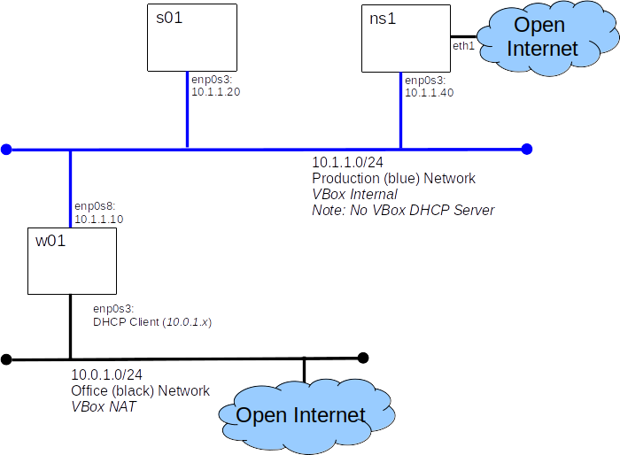

Today we will add a DNS server to our virtual lab. We will use the domain example.com which is reserved for testing. By building our own DNS server we will no longer need to maintain hosts files on every node.

This lab should be considered an "Advanced Cookbook".
You will demonstrate your understanding of this lab by completing an eLearn quiz.
Because we are adding a server and a network today's lab will have a relatively complex setup process. Don't panic, we'll guide you through it step by step.
nmcli connection modify enp0s3 ipv4.addresses 10.1.1.40/24 nmcli connection up enp0s3
ping 8.8.8.8
ns1 will be our DNS server, but won't "know" about servers beyond our control, so it needs to be able to support "recursive quires" - that just means, it needs to know about other DNS servers who can answer questions about hosts for which it is not authoritative.
The good news is, this is the default configuration that ships with our name server software (bind).
firewall-cmd --permanent --add-port=53/udp --add-port=53/tcp firewall-cmd --reload
yum install bind
yum install bind-utils
listen-on port 53 { 127.0.0.1; 10.1.1.40; };
allow-query { 10.1.1.0/24; localhost; };
systemctl start named systemctl enable named
yum install bind-utils
nmcli connection modify enp0s3 ipv4.dns 10.1.1.40 nmcli connection up enp0s3
nslookup www.google.ca
dig www.google.ca
nslookup ns1.example.comHow'd the lookup of ns1.example.com go? Answer Not too well, we have not configured our name server to handle example.com, yet.
zone "example.com" in{
type master;
file "master/master.example.com";
};
$TTL 86400 ; 24 hours could have been written as 24h or 1d
; $TTL used for all RRs without explicit TTL value
$ORIGIN example.com.
@ 1D IN SOA ns1.example.com. hostmaster.example.com. (
2002022401 ; serial
3H ; refresh
15 ; retry
1w ; expire
3h ; minimum
)
IN NS ns1
IN MX 10 s01
; server host definitions
ns1 IN A 10.1.1.40 ;name server definition
www IN A 10.1.1.20 ;web server definition
ftp IN CNAME s01.example.com. ;ftp server definition
; non server domain hosts
w01 IN A 10.1.1.10
s01 IN A 10.1.1.20
systemctl reload named
systemctl status named
It's nice to be able to go from name to IP, but sometimes we also need to be able to go from IP to name (often for security checks), to do this we need a reverse look-up zone.
zone "1.1.10.in-addr.arpa" in{
type master;
file "master/10.1.1.0.rev";
};
$TTL 86400 ; 24 hours, could have been written as 24h or 1d
@ IN SOA ns1.example.com. hostmaster.example.com. (
2002022401 ; serial
3H ; refresh
15 ; retry
1w ; expire
3h ; minimum
)
; Name servers for the zone - both out-of-zone - no A RRs required
IN NS ns1.example.com.
; server host definitions
40 IN PTR ns1.example.com.
; non server domain hosts
10 IN PTR w01.example.com.
20 IN PTR s01.example.com.
nslookup 10.1.1.40
dig -x 10.1.1.10
Configure ns1 and w01 to use ns1 as their name server.